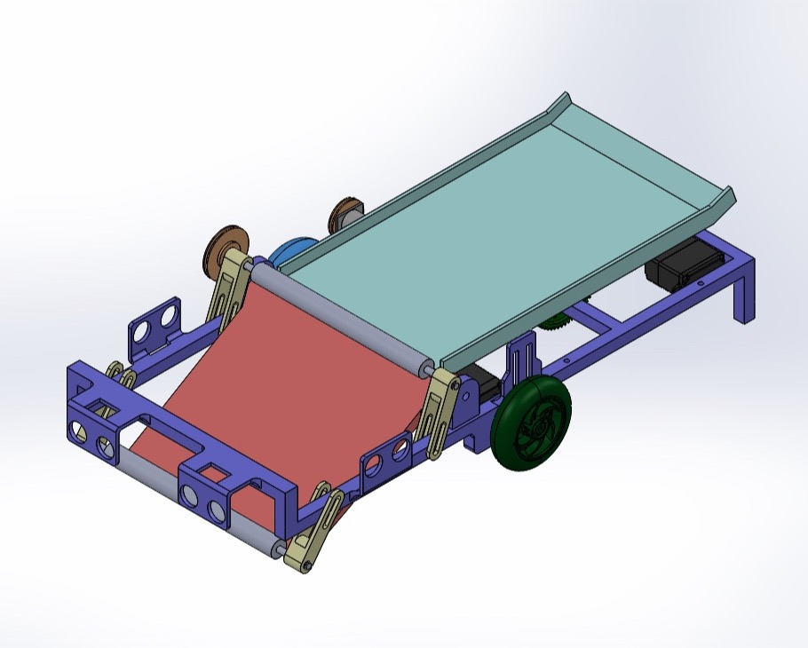
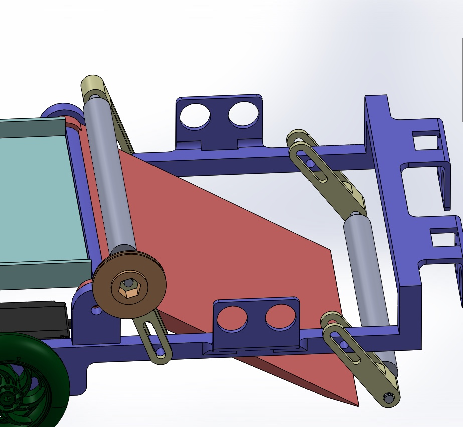
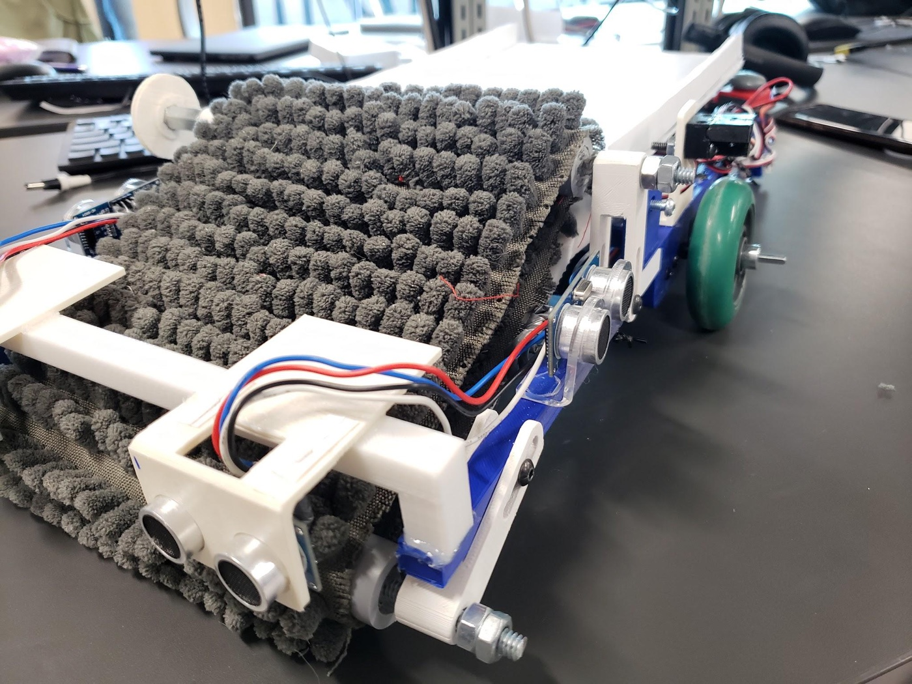
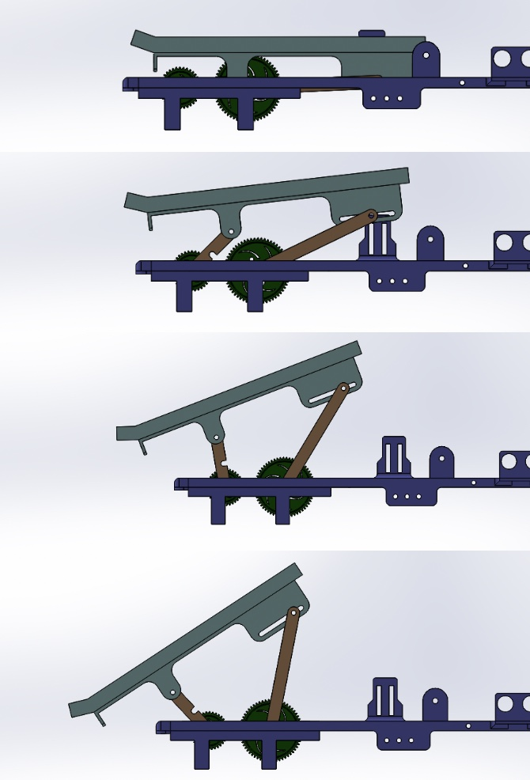
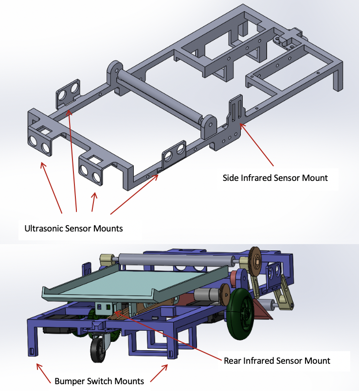
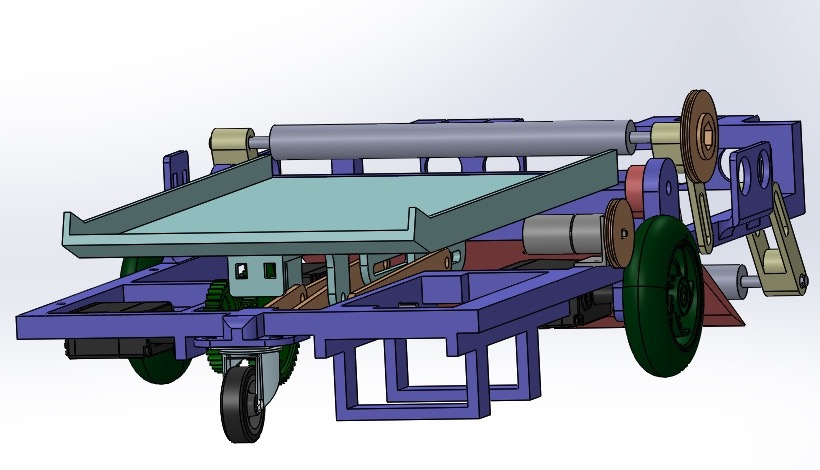

The problem
Screws, standoffs and bushings get dropped on the floor of the MSE design lab all day, and anything left there is swept away by the custodial staff. The lab wanted an autonomous machine to collect them into bins on the east wall. Picking parts up is the easy half: the robot also has to find its own way back to a charging station every 90 seconds, from anywhere in the room, with nobody driving it. I had $100 to prove the idea.
- Height14 cm, the measured clearance under the lab tables — which is where most parts end up.
- Width21 cm, the measured width of the charging station entrance.
- MassUnder 5 kg, both for the showcase score and to make turning easier.
- Charge cycleDocked every 90 s, so I gave the sweep 45 s and the trip home the other 45.
- Coverage90% of the parts on the floor, including the ones under the tables.
- Own partsFewer than half the components bought in off the VEX shelf — the showcase scored self-engineered parts.
Getting parts off the floor
I looked at a rotary brush and at vacuum suction first. A brush has to fling parts to move them, which means some of them miss the container or jam the mechanism, and it needs a tall housing to throw them up a ramp — height I did not have. Vacuum wanted more power and more complexity than the job was worth.
What I built instead is a hinged ramp that stays flush to the floor as the robot drives, with a thick shag carpet belt running round two rollers just above it. The belt grabs whatever the robot drives over and drags it up the ramp into the container. Each roller hangs off a slotted arm, so the gap between belt and ramp and the reach of the belt out over the floor are both adjustable without remaking a part.


The 14 cm ceiling
Driving under the lab tables left me 14 cm of height for the entire machine, and that one number decided most of it. The container could not sit high enough to simply tip into the bins from where it rode, so I designed a lift that raises it first and tips it second: a geared three-bar linkage on a 180° servo, with a 36-tooth and a 60-tooth gear and a 12-tooth idler between them to turn both shafts the same way.
The short links swing faster than the long ones, so as the container rises it is also dragged backwards along a slot joint, reaching out past the back of the robot before it tilts and lets the parts slide straight down into the bin. At rest it lies flat and forward, level with the top of the ramp. The finished design came out at 11.7 cm.

Finding its way home
Four ultrasonic sensors: two facing forward for walls and obstacles, one on each side to check there is room to turn before committing to one. Two infrared receivers — one facing left to catch the beacon at the charging station, one facing backwards to line the container up with the bins once the robot is close. Two limit switches on the rear corners tell it when it has actually touched the station.
Driving straight is encoder work: I compare the left and right counts and brake whichever motor has run ahead. U-turns are the same counts run to a tested value, and the sweep is a zigzag of those. At 45 seconds the robot abandons the sweep and drives a clockwise lap just inside the walls until the left-facing receiver sees the beacon, then rotates on the spot — that sensor sits on the same centreline as the wheels, so turning in place aims it at the entrance.

What worked, and what did not
The belt was the best thing on the robot: once it had driven over a part, it essentially never failed to pull it up into the container. The lift worked exactly as I had drawn it, extending to the tipping angle and snapping back into its rest ledge. Obstacle avoidance held up too — the prototype ran past the time limit without getting stuck.
Navigation did not. The right drive motor was also turning the rollers through a pulley, so it lost speed under that load and the robot curved right whatever I did to the correction factor. The zigzag had to be thrown out for a rough 100° left turn at every obstacle, which re-sweeps ground it has already covered. Arriving at the station from a random angle then meant it hit the sides of the bay instead of entering, and it was more likely to end up in an alignment loop than to dock. It never deposited parts reliably, which was the one thing the showcase scored.
Three smaller failures worth saying: larger parts jammed between the ramp and the rollers and stopped the belt; the front ultrasonics pinged the underside of the tables and turned the robot away from clearance it actually had; and none of the motors I tried had the torque to drive the belt alone, which is why the prototype drove it off a wheel shaft. Sorting parts by material was offered and I dropped it deliberately — too big, too heavy and too expensive against three constraints I had no room to spend.
